Dari trip-trip terbaru
Apa yang sebenarnya ada di bawah sana
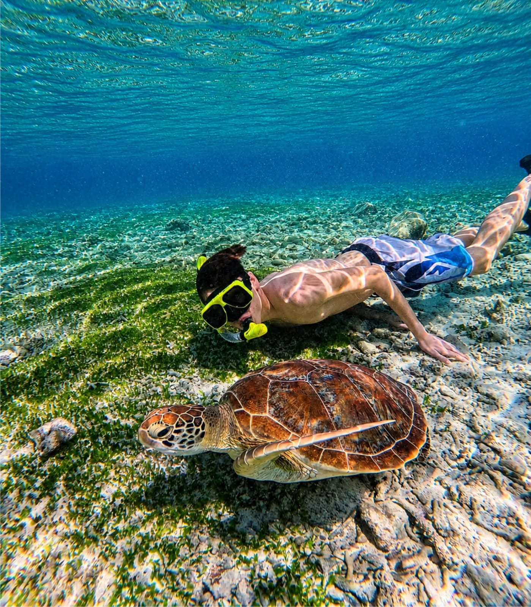
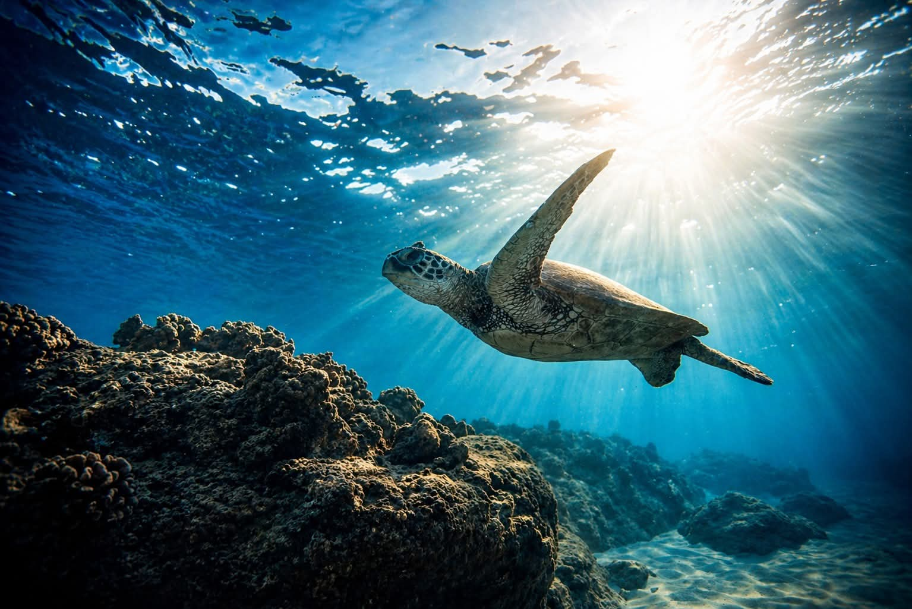

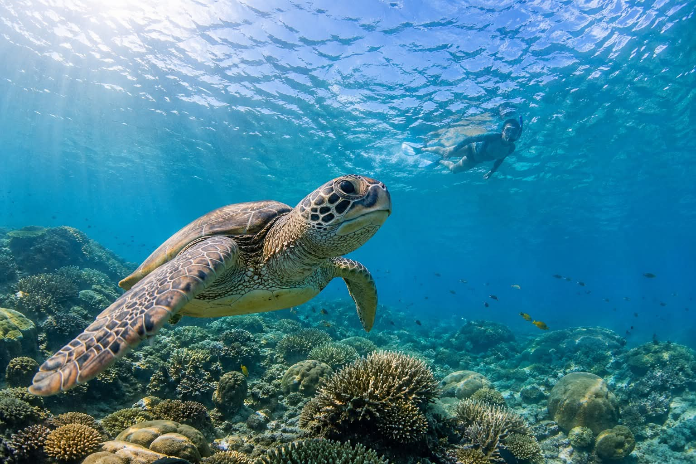
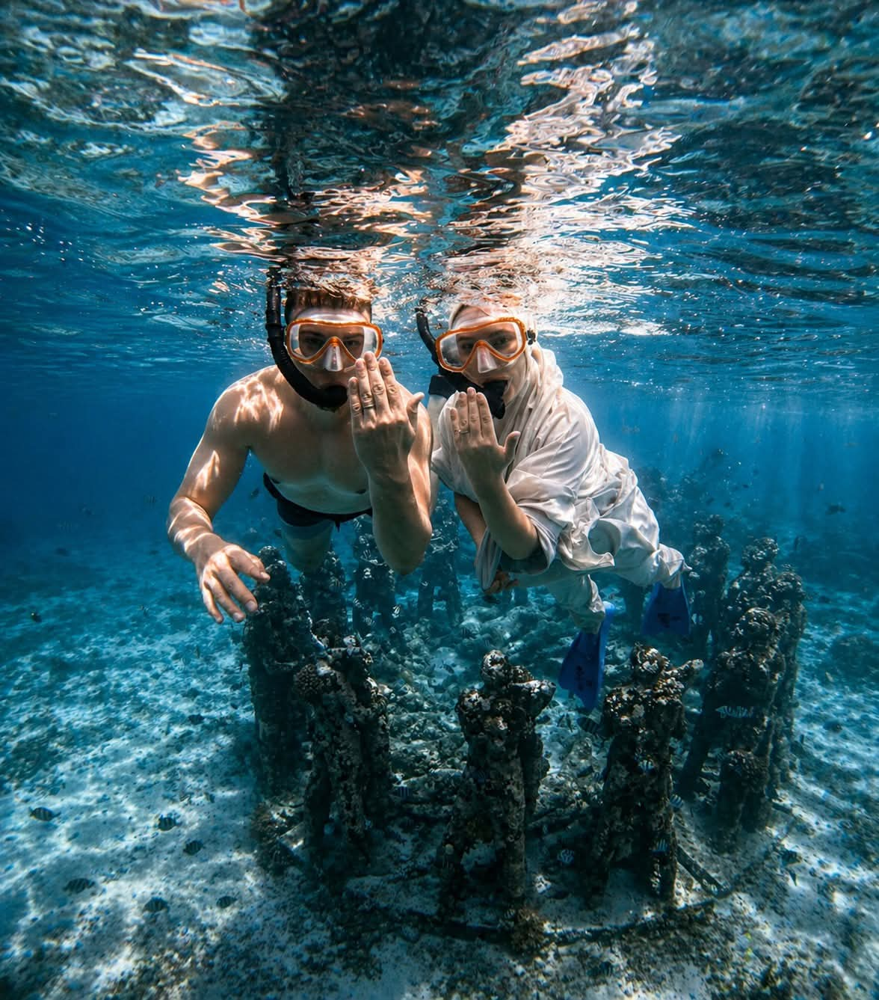
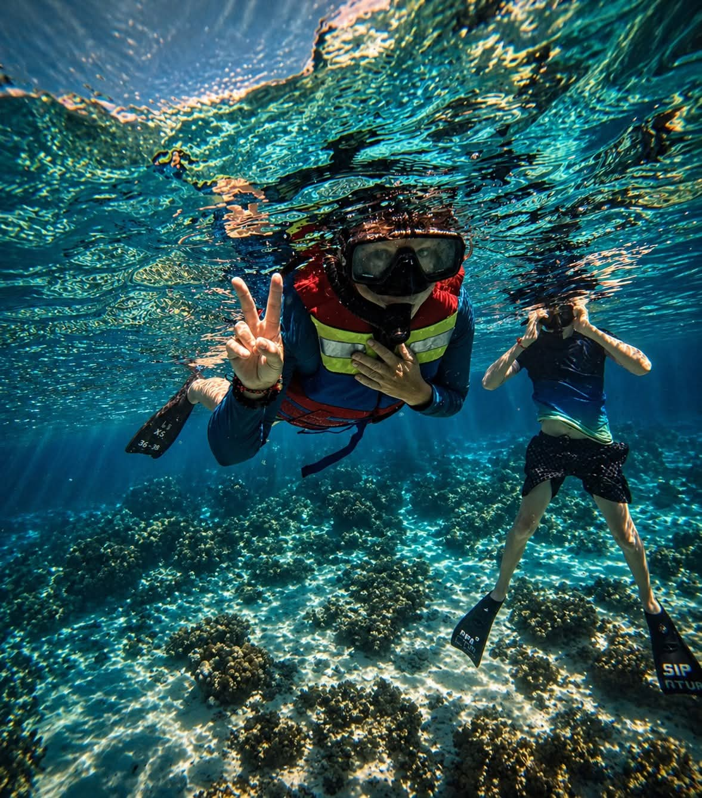
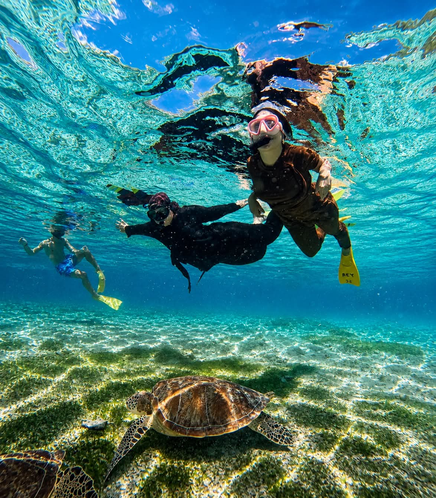
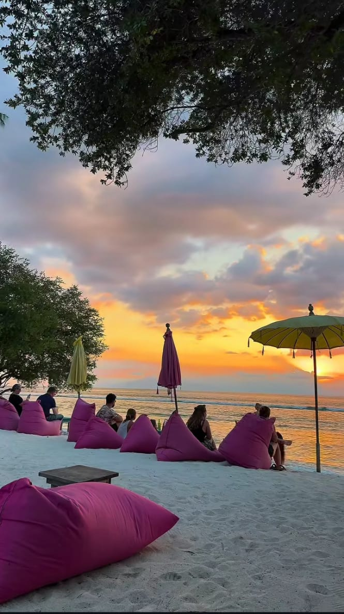

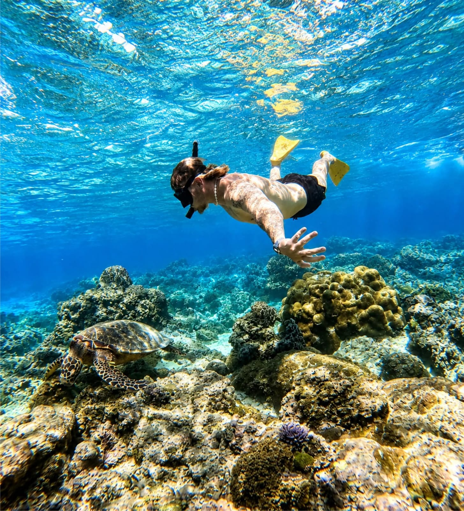
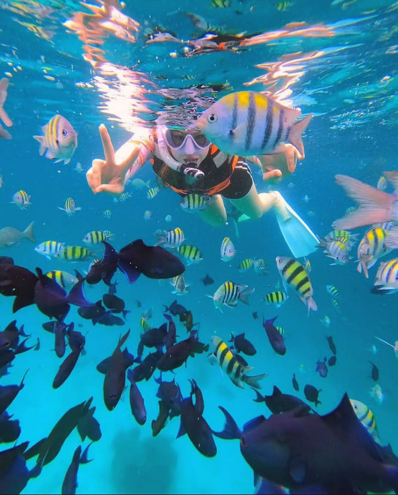
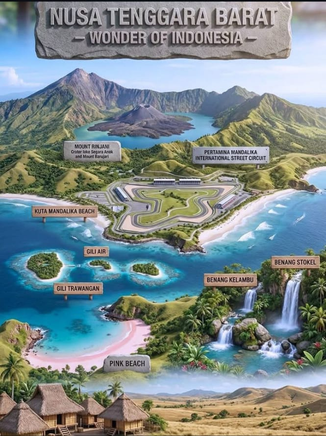

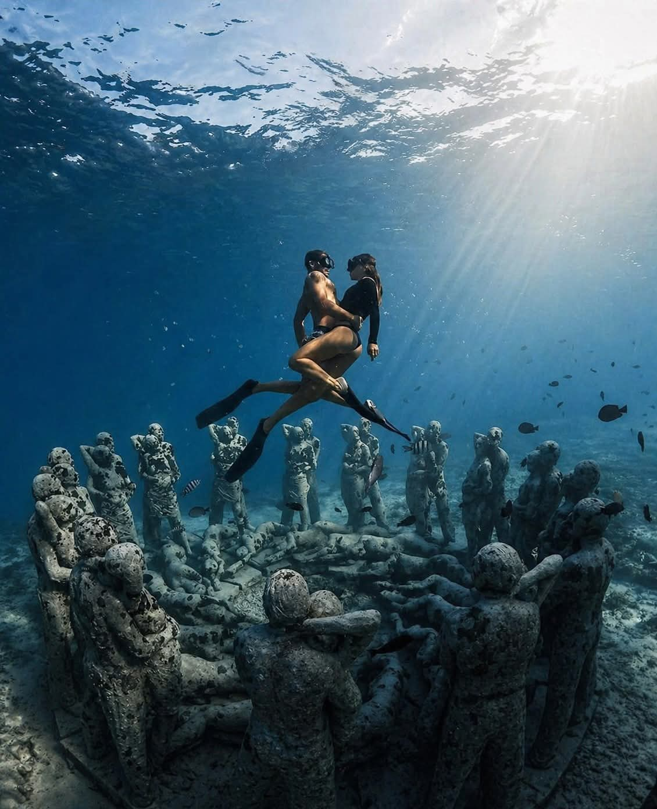
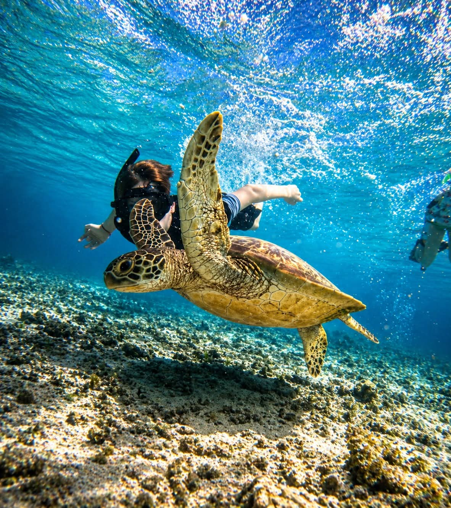
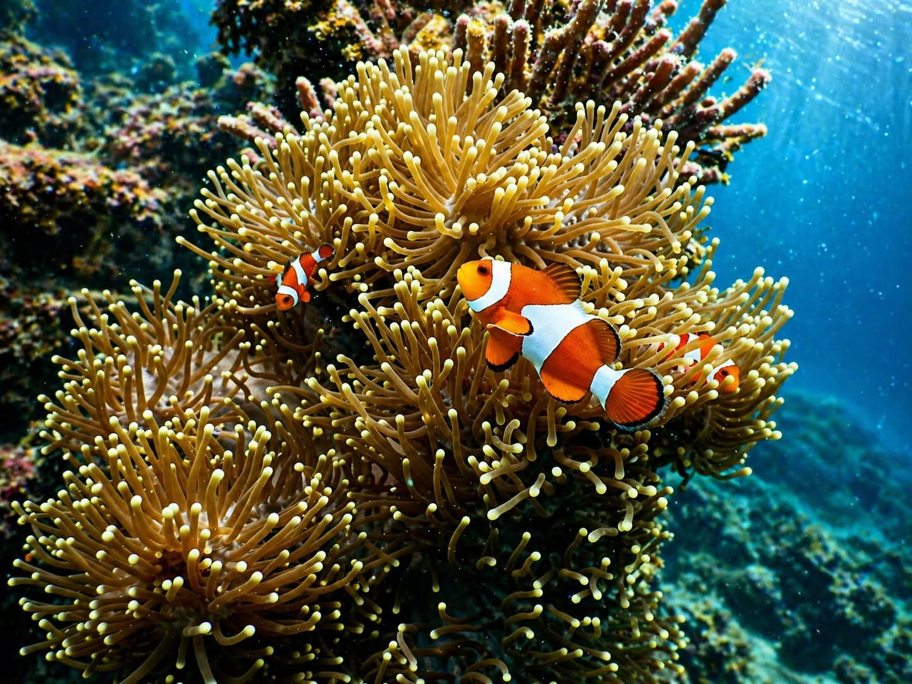
Trip kapal bersama dan charter privat menuju terumbu karang, bangkai kapal, dan patung bawah air di sekitar Kepulauan Gili, Lombok — dipandu guide yang tahu persis di mana penyu sedang mencari makan.
Kami menjalankan trip snorkeling setiap hari dari tiga Gili — Trawangan, Meno, dan Air. Setiap trip dirancang dengan satu tujuan: membuat Anda dekat dengan terumbu karang tanpa keramaian kaki katak yang mengaduk pasir di sekitar Anda. Foto dan video GoPro sudah termasuk di setiap pemesanan, jadi Anda pulang dengan bukti nyata.
Ikut bersama kelompok kecil, atau sewa kapal khusus untuk rombongan Anda sendiri. Kedua trip berangkat dari Gili Trawangan, Gili Meno, atau Gili Air.












Pulau terbesar dari ketiganya dan titik keberangkatan utama kami, dengan pilihan waktu jemput paling banyak.
Paling tenang di antara ketiganya, dan rumah bagi taman patung bawah air yang termasuk dalam Shared trip.
Paling dekat dengan daratan Lombok, dengan akses terumbu karang yang mudah langsung dari kapal.
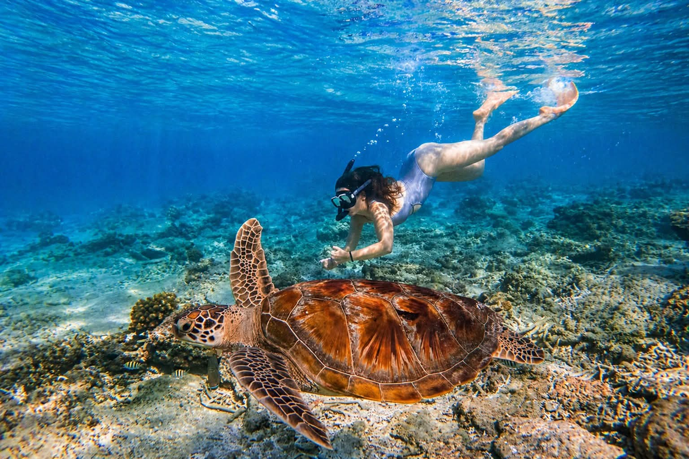
Terumbu karang tidak peduli jam berapa sekarang. Trip Anda pun seharusnya begitu.